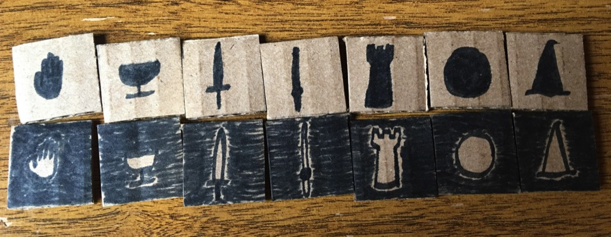

Invented by Chris St. Clair
Archmage is a two-player game played on a seven-by-seven square board with a hole in the center square. The game is played with 14 pieces, initially 7 black and 7 white. One player plays white. The other plays black.
The goal of the game is to capture pieces of your opponents color. Pieces are captured by being pushed off the board or pushed or pulled into the center hole. First the players place their pieces on the board. Then play continues until no more moves are possible. Whichever player has captured the most pieces of his opponent's color wins.

The game starts with all the pieces off the board. The players alternate placing a piece of their color on an empty board square until all fourteen pieces are placed. White goes first. Play then continue, alternating players.
During each turn, a player must make at least one move, if he has one. After that initial move, he can make as many more moves as he likes.
For each move, one of the pieces is the actor. The actor's movement rules determine which pieces can be its subjects, and whether the subject moves towards or away from the actor. Some pieces only push away. Some only pull towards. Some can push or pull. Some pieces may operate on targets in the same row or column. Some may operate on targets in a diagonal. Some may operate horizontally, vertically, or diagonally. Some pieces only operate on adjecent pieces (or two away for pulling). Some operate far away. The table below summarizes. The top-to-bottom order of the pieces in the table is the same as the left-to-right order of the pieces in the image above.
| Piece | Push/Pull | Direction | Distance | Notes |
|---|---|---|---|---|
| Hand | push | horizontal/vertical | 1 | The hand can push away a piece that is right next to it in the same row or column. |
| Cup | pull | horizontal/vertical | 2 | The cup can pull a piece that is one away from it in the same row or column. |
| Sword | push | diagonal | 1 | The sword can push away a piece that is right next to it in the same diagonal. |
| Wand | pull | diagonal | 2 | The wand can pull a piece that is one away from it in the same diagonal. |
| Tower | push/pull | horizontal/vertical | any | The tower can push or pull a piece any distance away in the same row or column. |
| Moon | push/pull | diagonal | any | The moon can push or pull a piece any distance away in the same diagonal. |
| Mage | push/pull | horizontal/vertical/diagonal | 1 or 2 | The mage can push a piece right next to it or pull a piece one away, in any direction. |
When the actor piece moves the subject piece according to the rules above, the actor's color changes. The current player may only use as actors pieces that are his color. Hence, any piece of his color may only act once. It then becomes a piece of the other player's color. The subject may be either color. When a target piece is pushed off the board or pushed or pulled into the center hole, it becomes a capture for the player of the opposite color of the target piece.